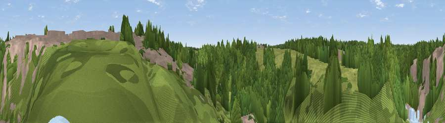

Viewpoint near Knaresborough
#44933 in England · top 96% of its area beats it · near KnaresboroughWhere it is
The exact computed spot (SE 34824 56875). Click the marker for map links.
The view, rendered

A 360° render of this exact spot computed from the terrain model, tree cover and land cover — summer colours, afternoon light, calibrated against photographs of famous viewpoints. Real trees, hedges and buildings will differ in detail.
The panorama
Grey silhouette: terrain skyline in each direction (720 bearings, Earth curvature and refraction included). Dashed green: skyline with trees (+15 m) and buildings (+8 m) as obstacles. Blue strip: how far the ground is visible on each bearing.
Where the view opens
Wedge length = distance to the farthest visible ground on that bearing (vegetation-aware). Rings at 10, 25 and 50 km.
What fills the view
58% woodland · 20% grassland · 18% built-up · 3% water
Angular shares of the visible panorama (visual magnitude), not map area. Landscape diversity 0.46 (0–1 Shannon).
Key numbers
More beautiful places nearby
The staircase of upgrades: each row has a higher view potential than everything closer. Driving times are estimates from straight-line distance, calibrated against real road routing — check an actual route before setting out.
| Place | Direction | Drive | Score |
|---|---|---|---|
| Howe Hill | NNW · 1 km | ~3 min | 19.9 |
| Gibbet Hill | NNE · 3 km | ~8 min | 57.0 |
| Walton Head Whin | SSW · 8 km | ~16 min | 60.5 |
| Viewpoint near Kirkby Overblow | SSW · 9 km | ~17 min | 63.5 |
| Viewpoint near North Rigton | SW · 11 km | ~21 min | 66.6 |
| How Hill | NW · 12 km | ~23 min | 72.9 |
| Viewpoint near Otley | SW · 19 km | ~33 min | 77.5 |
| Hood Hill | NNE · 29 km | ~46 min | 79.6 |
54.00673, -1.47015 · source: osm viewpoint · position refined by local search. Computed location — check access rights before visiting.